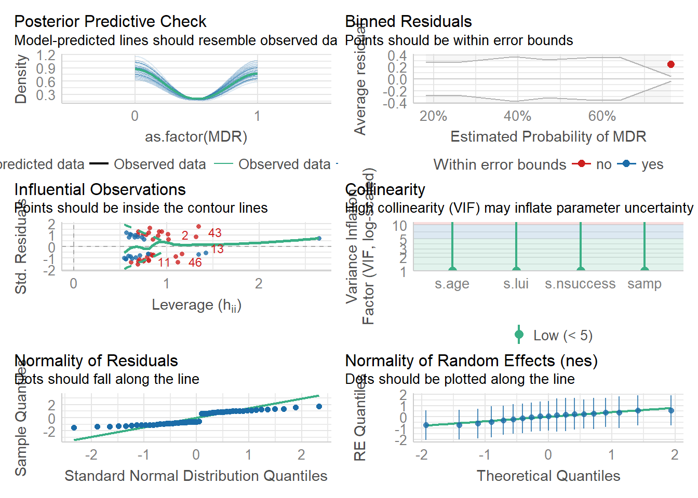

#load needed packages. make sure they are installed.
library(ggplot2) #for plotting
library(ggeffects) #to explore plots
library(broom) #for cleaning up output from lm()
library(broom.mixed) #for cleaning up output from lmer()
library(here) #for data loading/saving
library(multilevelmod) #mixed effect models
library(tidymodels)
library(lme4)
library(sjPlot) #to help plot models
library(performance) #evaluate model fit and performance
library(see)
#path to data
data_location <- here::here("2 Clean Data","stork_AMR_2021.rds")
#load data.
data <- readRDS(data_location)StatiscalAnalysis_ModelFitting
Ciconia ciconia analysis script
this script loads the processed, cleaned data, does a simple analysis and saves the results to the results folder
Data fitting/statistical analysis
Data of interest: Landfill use index (LUI) and multi-drug resistence (MDR) throughout the different sampling periods during the stork breeding season.
We’ll start by fitting two models. We will used mixed-effects models to control for repeated sampling of the same nest. The design is unbalanced, thus we cannot use a repeated measures anova.
We’ll start with a single factor repeated measures evaluation the effect of LUI on blaTEM (betalactam) resistence gene burden.
data(data, package = "lme4")Warning in data(data, package = "lme4"): data set 'data' not founddata %>%
ggplot(aes(x = samp, y = Burden)) +
geom_point() +
geom_line() +
facet_wrap(~ nes) `geom_line()`: Each group consists of only one observation.
ℹ Do you need to adjust the group aesthetic?
`geom_line()`: Each group consists of only one observation.
ℹ Do you need to adjust the group aesthetic?
`geom_line()`: Each group consists of only one observation.
ℹ Do you need to adjust the group aesthetic?
`geom_line()`: Each group consists of only one observation.
ℹ Do you need to adjust the group aesthetic?
No obvious trends…
Build models using lmer and glmer
lmer_spec <-
linear_reg() %>%
set_engine("lmer")
glmer_spec <-
logistic_reg() %>%
set_engine("glmer")Multi-drug resistance (0,1 data) vs All
#compare between previous lmer fit and new glmer fit
lmer_fit_null <-
lmer_spec %>%
fit(MDR ~ (1|nes), data = data)
glmer_fit_null <-
glmer_spec %>%
fit(as.factor(MDR) ~ (1|nes), data = data)
compare_performance(lmer_fit_null,glmer_fit_null)# Comparison of Model Performance Indices
Name | Model | AIC (weights) | AICc (weights) | BIC (weights) | R2 (cond.) | R2 (marg.) | ICC | RMSE | Sigma | Log_loss | Score_log | Score_spherical
----------------------------------------------------------------------------------------------------------------------------------------------------------------------
lmer_fit_null | _lmerMod | 112.8 (0.033) | 113.2 (0.031) | 119.8 (0.011) | 0.090 | 0.000 | 0.090 | 0.458 | 0.480 | | |
glmer_fit_null | _glmerMod | 106.1 (0.967) | 106.3 (0.969) | 110.7 (0.989) | 0.065 | 0.000 | 0.065 | 0.473 | 1.000 | 0.639 | -27.422 | 0.043glmer_fit_global <-
glmer_spec %>%
fit(as.factor(MDR) ~ s.lui + s.age + samp + s.nsuccess +(1|nes), data = data)Warning in checkConv(attr(opt, "derivs"), opt$par, ctrl = control$checkConv, :
Model failed to converge with max|grad| = 0.0112129 (tol = 0.002, component 1)#Univariate models
glmer_fit_1 <-
glmer_spec %>%
fit(as.factor(MDR) ~ s.lui +(1|nes), data = data)
glmer_fit_2 <-
glmer_spec %>%
fit(as.factor(MDR) ~ s.age +(1|nes), data = data)
glmer_fit_3 <-
glmer_spec %>%
fit(as.factor(MDR) ~ samp +(1|nes), data = data)
glmer_fit_4 <-
glmer_spec %>%
fit(as.factor(MDR) ~ s.nsuccess +(1|nes), data = data)
glmer_fit_5 <-
glmer_spec %>%
fit(as.factor(MDR) ~ s.lui + samp +(1|nes), data = data)
glmer_fit_6 <-
glmer_spec %>%
fit(as.factor(MDR) ~ s.lui + s.nsuccess +(1|nes), data = data)
glmer_fit_7 <-
glmer_spec %>%
fit(as.factor(MDR) ~ samp + s.nsuccess +(1|nes), data = data)
glmer_fit_8 <-
glmer_spec %>%
fit(as.factor(MDR) ~ s.lui*s.age + samp + s.nsuccess +(1|nes), data = data)Warning in checkConv(attr(opt, "derivs"), opt$par, ctrl = control$checkConv, :
unable to evaluate scaled gradientWarning in checkConv(attr(opt, "derivs"), opt$par, ctrl = control$checkConv, :
Model failed to converge: degenerate Hessian with 1 negative eigenvaluesglmer_fit_9 <-
glmer_spec %>%
fit(as.factor(MDR) ~ s.lui + s.age*samp + s.nsuccess +(1|nes), data = data)Warning in checkConv(attr(opt, "derivs"), opt$par, ctrl = control$checkConv, :
Model failed to converge with max|grad| = 0.0109187 (tol = 0.002, component 1)glmer_fit_10 <-
glmer_spec %>%
fit(as.factor(MDR) ~ s.lui + s.age + samp*s.nsuccess +(1|nes), data = data)
glmer_fit_11 <-
glmer_spec %>%
fit(as.factor(MDR) ~ s.lui + s.age +(1|nes), data = data)
glmer_fit_12 <-
glmer_spec %>%
fit(as.factor(MDR) ~ s.lui + s.age + s.nsuccess +(1|nes), data = data)Use AIC to see the best model; None look great…
AIC_table1 <- compare_performance(glmer_fit_null,glmer_fit_global, glmer_fit_1, glmer_fit_2, glmer_fit_3, glmer_fit_4, glmer_fit_5, glmer_fit_6, glmer_fit_7, glmer_fit_8, glmer_fit_9, glmer_fit_10, glmer_fit_11, glmer_fit_12, rank = TRUE, metrics="AICc")Warning: When comparing models, please note that probably not all models were fit
from same data.print(AIC_table1)# Comparison of Model Performance Indices
Name | Model | AICc weights | Performance-Score
---------------------------------------------------------------
glmer_fit_11 | _glmerMod | 0.325 | 100.00%
glmer_fit_2 | _glmerMod | 0.316 | 97.20%
glmer_fit_12 | _glmerMod | 0.117 | 36.06%
glmer_fit_global | _glmerMod | 0.096 | 29.58%
glmer_fit_10 | _glmerMod | 0.056 | 17.26%
glmer_fit_9 | _glmerMod | 0.026 | 7.88%
glmer_fit_8 | _glmerMod | 0.025 | 7.73%
glmer_fit_1 | _glmerMod | 0.019 | 5.92%
glmer_fit_5 | _glmerMod | 0.011 | 3.46%
glmer_fit_6 | _glmerMod | 0.007 | 2.18%
glmer_fit_null | _glmerMod | 9.24e-08 | 1.88e-05%
glmer_fit_3 | _glmerMod | 7.24e-08 | 1.27e-05%
glmer_fit_4 | _glmerMod | 3.61e-08 | 1.50e-06%
glmer_fit_7 | _glmerMod | 3.12e-08 | 0.00%AIC_table1 %>%
saveRDS(here("4 Results","Tables", "ModelAIC1.rds"))
plot(compare_performance(glmer_fit_null,glmer_fit_global, glmer_fit_1, glmer_fit_2, glmer_fit_3, glmer_fit_4, glmer_fit_5, glmer_fit_6, glmer_fit_7, glmer_fit_8, glmer_fit_9, glmer_fit_10, glmer_fit_11, glmer_fit_12))Warning: When comparing models, please note that probably not all models were fit
from same data.
Summarize and graph best model (lowwest AIC)
check_model(glmer_fit_11)
# place results from fit into a data frame with the tidy function
model1 <- broom::tidy(glmer_fit_11)
print(model1)# A tibble: 4 × 7
effect group term estimate std.error statistic p.value
<chr> <chr> <chr> <dbl> <dbl> <dbl> <dbl>
1 fixed <NA> (Intercept) -0.0384 0.353 -0.109 0.913
2 fixed <NA> s.lui -0.578 0.395 -1.46 0.143
3 fixed <NA> s.age 0.0439 0.356 0.123 0.902
4 ran_pars nes sd__(Intercept) 0.709 NA NA NA # save fit results table
model1 %>%
saveRDS(here("4 Results", "Models", "LMERmodel1.rds"))
MLp <- plot_model(glmer_fit_11,terms = 's.lui', type="pred",
show.data = TRUE, show.values = TRUE, show.p = TRUE,
title = "", show.legend = TRUE, line.size=1,
axis.title = c("Landfill Use Index",'Multi-Drug Resistence'))
MLp
ggsave(MLp, file="LUIvsMDR_LME.tiff")Saving 7 x 5 in imageAMR Gene Burden vs All
lmer_fit2_null <- #singular
lmer_spec %>%
fit(Burden ~ (1|nes), data = data)
lmer_fit2_global <-
lmer_spec %>%
fit(Burden ~ s.lui + s.age + samp + s.nsuccess +(1|nes), data = data) #overfitboundary (singular) fit: see help('isSingular')#Univariate models
lmer_fit2_1 <-
lmer_spec %>%
fit(Burden ~ s.lui +(1|nes), data = data)
lmer_fit2_2 <-
lmer_spec %>%
fit(Burden ~ s.age +(1|nes), data = data) #overfitboundary (singular) fit: see help('isSingular')lmer_fit2_3 <-
lmer_spec %>%
fit(Burden ~ samp +(1|nes), data = data)
lmer_fit2_4 <-
lmer_spec %>%
fit(Burden ~ s.nsuccess +(1|nes), data = data)
lmer_fit2_5 <-
lmer_spec %>%
fit(Burden ~ s.lui + samp +(1|nes), data = data)
lmer_fit2_6 <-
lmer_spec %>%
fit(Burden ~ s.lui + s.nsuccess +(1|nes), data = data)
lmer_fit2_7 <-
lmer_spec %>%
fit(Burden ~ samp + s.nsuccess +(1|nes), data = data)
lmer_fit2_8 <-
lmer_spec %>%
fit(Burden ~ s.lui*s.age + samp + s.nsuccess +(1|nes), data = data) #overfitboundary (singular) fit: see help('isSingular')lmer_fit2_9 <-
lmer_spec %>%
fit(Burden ~ s.lui + s.age*samp + s.nsuccess +(1|nes), data = data) #overfitboundary (singular) fit: see help('isSingular')lmer_fit2_10 <-
lmer_spec %>%
fit(Burden ~ s.lui + s.age + samp*s.nsuccess +(1|nes), data = data) #overfitboundary (singular) fit: see help('isSingular')lmer_fit2_11 <-
lmer_spec %>%
fit(Burden ~ s.lui + s.age + s.nsuccess +(1|nes), data = data) #overfitboundary (singular) fit: see help('isSingular')lmer_fit2_12 <-
lmer_spec %>%
fit(Burden ~ s.lui + s.age +(1|nes), data = data) #overfitboundary (singular) fit: see help('isSingular')#Standardizing variables helped with the overfit/singular model resultsUse AIC to see the best model; This doesnt look great either…
AIC_table2 <- compare_performance(lmer_fit2_null, lmer_fit2_global, lmer_fit2_1, lmer_fit2_2, lmer_fit2_3, lmer_fit2_4, lmer_fit2_5, lmer_fit2_6, lmer_fit2_7, lmer_fit2_8,
lmer_fit2_9, lmer_fit2_10, lmer_fit2_11, lmer_fit2_12, rank = TRUE, metrics="AICc")Warning: When comparing models, please note that probably not all models were fit
from same data.print(AIC_table2)# Comparison of Model Performance Indices
Name | Model | AICc weights | Performance-Score
--------------------------------------------------------------
lmer_fit2_global | _lmerMod | 0.264 | 100.00%
lmer_fit2_2 | _lmerMod | 0.228 | 86.39%
lmer_fit2_11 | _lmerMod | 0.134 | 50.70%
lmer_fit2_12 | _lmerMod | 0.113 | 42.68%
lmer_fit2_9 | _lmerMod | 0.111 | 42.10%
lmer_fit2_10 | _lmerMod | 0.082 | 30.95%
lmer_fit2_8 | _lmerMod | 0.067 | 25.46%
lmer_fit2_5 | _lmerMod | 1.03e-14 | 3.89e-12%
lmer_fit2_1 | _lmerMod | 5.01e-15 | 1.90e-12%
lmer_fit2_6 | _lmerMod | 1.52e-15 | 5.75e-13%
lmer_fit2_null | _lmerMod | 6.15e-57 | 1.84e-54%
lmer_fit2_3 | _lmerMod | 4.01e-57 | 1.03e-54%
lmer_fit2_4 | _lmerMod | 2.15e-57 | 3.24e-55%
lmer_fit2_7 | _lmerMod | 1.29e-57 | 0.00%AIC_table2 %>%
saveRDS(here("4 Results","Tables", "ModelAIC2.rds"))
plot(compare_performance(lmer_fit2_null, lmer_fit2_global, lmer_fit2_1, lmer_fit2_2, lmer_fit2_3, lmer_fit2_4, lmer_fit2_5, lmer_fit2_6, lmer_fit2_7, lmer_fit2_8,
lmer_fit2_9, lmer_fit2_10, lmer_fit2_11, lmer_fit2_12))Random effect variances not available. Returned R2 does not account for random effects.
Random effect variances not available. Returned R2 does not account for random effects.
Random effect variances not available. Returned R2 does not account for random effects.
Random effect variances not available. Returned R2 does not account for random effects.
Random effect variances not available. Returned R2 does not account for random effects.
Random effect variances not available. Returned R2 does not account for random effects.
Random effect variances not available. Returned R2 does not account for random effects.Warning: When comparing models, please note that probably not all models were fit
from same data.
Summarize and graph best model (lowwest AIC)
check_model(lmer_fit2_5)
model2 <- broom::tidy(lmer_fit2_5)
print(model2)# A tibble: 5 × 6
effect group term estimate std.error statistic
<chr> <chr> <chr> <dbl> <dbl> <dbl>
1 fixed <NA> (Intercept) 0.958 14.1 0.0681
2 fixed <NA> s.lui 3.16 5.48 0.578
3 fixed <NA> samp 12.4 6.34 1.96
4 ran_pars nes sd__(Intercept) 6.75 NA NA
5 ran_pars Residual sd__Observation 39.0 NA NA # save fit results table
model2 %>%
saveRDS(here("4 Results","Models", "LMERmodel2.rds"))
BLp <- plot_model(lmer_fit2_5,terms = 's.lui', type="pred",
show.data = TRUE, show.values = TRUE, show.p = TRUE,
title = "", show.legend = TRUE, line.size=1,
axis.title = c("Landfill Use Index",'Total Antibiotic Resistant Gene Burden'))
BLp
ggsave(BLp, file="LUIvsBurden_LME.tiff")Saving 7 x 5 in imagePreliminary results
Questions: Should over fit models be taken out of performance analysis?
**What is the best tool/package to control for small data sets? If using weighted AIC is it appropriate to also use other methods of performance analysis (R2, RSME, etc).
How to get Manuscript to popular rds and tiff files. GLMER vs LMER